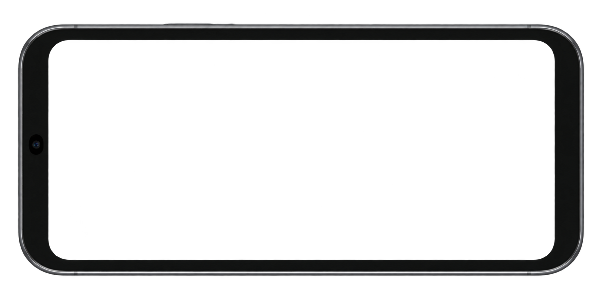

행렬의 기운200 / 200
인왕산아침
0%새벽문까지
70엽전 / 100
A JOURNEY THROUGH THE INK
하루를 건너,
새벽문까지.
해태와 작은 동료들을 이끌고
오른쪽 길 끝까지 나아가세요.
설정에서 전체 화면 또는 홈 화면에 추가
약 3분의 여정 · 터치와 키보드 지원
그림을 불러오는 중…
첫 번째 길인왕산
동료 1 / 7
동료 소환
필살기
휴대폰을 가로로 돌려 주세요.
왼손은 이동, 오른손은 동료와 기술.
해태와 작은 동료들을 이끌고
오른쪽 길 끝까지 나아가세요.
설정에서 전체 화면 또는 홈 화면에 추가

타격 +1 엽전 · 처치 보너스 · 엽전을 써서 동료와 기술을 사용해요.
이동 A D · 일시정지 SPACE가로 화면에서 더 넓게 볼 수 있어요.누렁소는 앞에서 막고
달토끼는 뒤에서 쏩니다.
돌진은 발구름으로 끊고
회복술은 부적으로 끊어요.
타격과 처치로 엽전을 모아
동료를 부르고 기술을 써요.